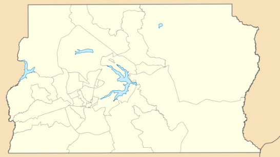

TÓPICO 3
FERRAMENTAS DE TERRITORIALIZAÇÃO PARA A ESF
TÓPICO 3
FERRAMENTAS DE TERRITORIALIZAÇÃO PARA A ESF
Clique no mapa para conhecer outras ferramentas de apoio à territorialização.
PRODUÇÃO DE IMAGENS
Um recurso importante é a produção de imagens, por intermédio de fotografias, das condições e da produção de vida e saúde nos territórios. A prévia organização de roteiros de produção de imagens sobre os contextos sociais locais e as situações de saúde específicas pode servir de ferramenta para a investigação e a reconstrução do conhecimento.
As imagens retratam as condições materiais necessárias de subsistência nos territórios, que detêm um conjunto de signos que encontram no texto visual um grande potencial não só para expressar conhecimento, mas como estratégia de análise qualitativa das condições de vida e da situação de saúde.
x
DIÁLOGO COM A COMUNIDADE
Podemos estabelecer várias formas de diálogo com a comunidade. Uma das possibilidades são as entrevistas, as quais permitem a produção de dados estatísticos, gráficos e tabelas que facilitam análise e compreensão do que foi coletado no território.
Outra ferramenta consiste nas entrevistas semiestruturadas, as quais permitem o aprofundamento de um determinado tema, ao mesmo tempo que dão liberdade ao entrevistador para fazer novas perguntas, de acordo com as respostas obtidas.
As rodas de conversas são também instrumentos importantes, pois pode-se construir uma linha do tempo, relembrando fatos e momentos da história do lugar.
x
INSTRUMENTO DE CARACTERIZAÇÃO RÁPIDA PARTICIPATIVA
O diagnóstico rápido participativo é um conjunto de técnicas e ferramentas que permite às comunidades realizarem seu próprio diagnóstico e começarem o seu autogerenciamento, o planejamento e o desenvolvimento de ações por meio do compartilhamento de experiências e análise dos conhecimentos adquiridos, com a finalidade de melhorar suas habilidades de ações.
Dessa forma, permite colher dados de maneira ágil e oportuna e em um formato no qual as pessoas da comunidade reflitam sistematicamente seus problemas e as possíveis soluções e compartilhem seus achados com as equipes da eSF.
x
USO DE APLICATIVOS DE TELEFONIA MÓVEL
O uso das tecnologias de comunicação móvel como recurso de localização, memória, armazenamento e obtenção de informações das condições de vida e saúde nos territórios torna-se estratégico. A utilização de aplicativos de georreferenciamento, de comunicação e de imagens, usados principalmente em aparelhos celulares, tem possibilitado gerar informações em tempo real, investigar e monitorar emergências sanitárias, além de veicular informações educativas e construir outras dinâmicas de mobilização, interação social e ação coletiva nos territórios.
x
DIÁRIO DE CAMPO
O diário de campo nos permite registrar o que observamos no território: a paisagem, as plantações, a infraestrutura, os equipamentos públicos (hospitais, escolas, praças, academias da saúde, posto policial etc.), as pessoas e como elas se comportam. Além disso, permite ouvir as histórias dos moradores e suas percepções sobre o lugar onde vivem, os sentimentos e os descontentamentos, as críticas, os desejos e os sonhos.
x